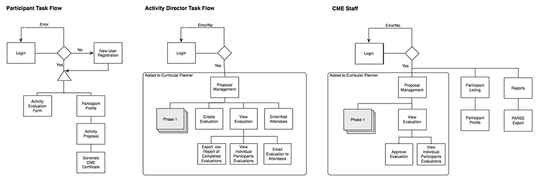
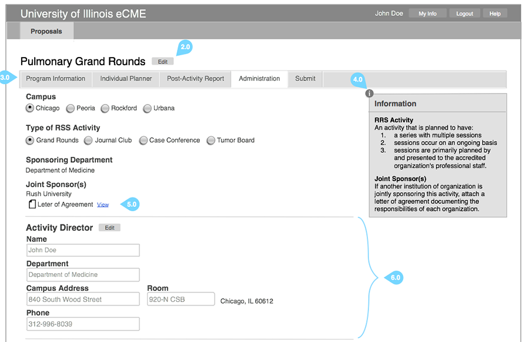
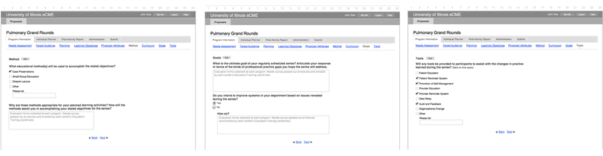

eCMEWeb Application
Interaction Design | Information Architecture | Research | Front-End Development
The Electronic Continuing Medical Education (eCME) application was designed to allow electronic submission of activity proposals, credit assignment and transcript viewing for the Office of Continuing Medical Education at the University of Illinois. The primary users were the Office of Continuing Medical Education, Activity Directors, and Physicians.
Learning the process of how Continuing Medical Education credits was my first step to better understand the goals of this project. I met with the primary stakeholders to determine the business needs and to better understand the problem we were trying to solve. The primary user groups were administrators in the CME office and physicians who submit applications. Both groups were interviewed and process flows were created. I developed wireframes for all screens and notated the interactions that I then shared for review and feedback with the stakeholders and the software engineers. The team began coding both front-end and back-end with regular checkpoints with the stakeholders.
Working closely with the two software engineers on the team, I designed and developed the front-end using html, css, and jQuery. This process involved daily collaboration within the team.
The eCME application was gradually phased into the process of submitting Continuing Medical Education proposals. The application decreased the need to print large proposals and eliminated the need of a physical submission process.